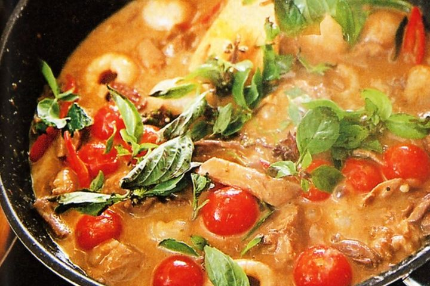

<ion-header>
  <ion-toolbar color="primary">
    <ion-title class="text-custom">
      Cook
    </ion-title>
  </ion-toolbar>
</ion-header>

<ion-content>
  <ion-list>
    <ion-item [routerLink]="['/recipes/', foo]" routerDirection="forward">
      <ion-thumbnail slot="start">
        
      </ion-thumbnail>
      <ion-label>
          <h2>Thai Red Duck Curry</h2>
          <h3>Blah</h3>
          <p>Something, Something</p>
      </ion-label>
    </ion-item>
  </ion-list>
</ion-content>
